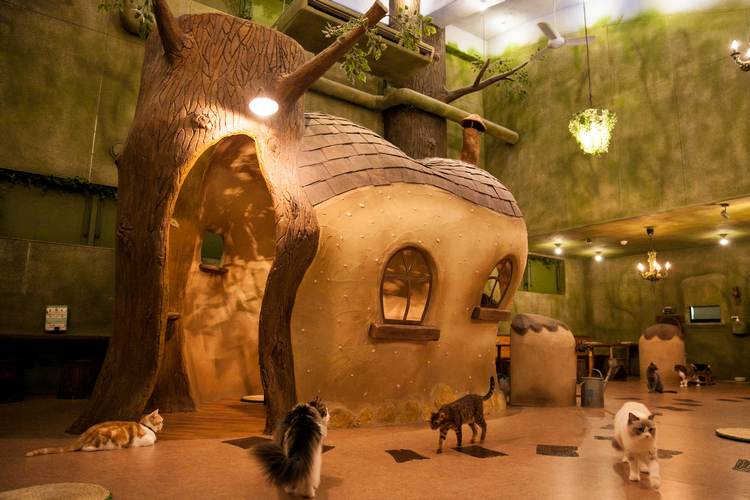
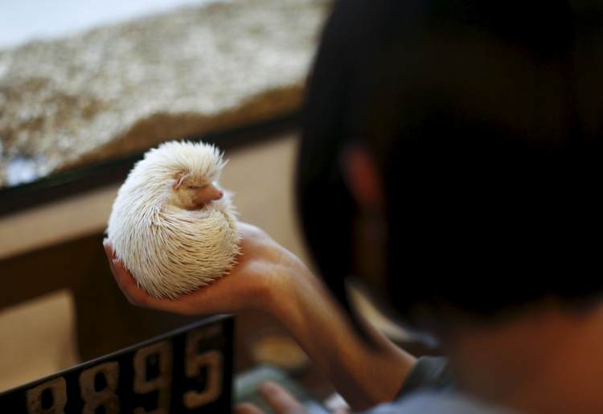

Впервые кошачий ресторан японцы увидели в Тайване. Эта затея пришлась по вкусу. Дело в том, что не каждому жителю архипелага позволено держать в квартире домашнего любимца. Если быть точнее, то редко кто держит животных в мегаполисе. А общение с кошками, согласно местному фольклору, помогает забыть о тяготах дня и расслабиться. Каждый из нас знает, что общение с животными, в частности с кошками снимает стресс, помогает успокоиться и набраться положительных эмоций.
Как правило, кошачье кафе, это не совсем кафе в обычном понимании слова. Это небольшое помещение и в основном выглядит как обычная квартира, куда приходят любители кошек пообщаться с питомцами и с людьми по интересам, то есть в таком кафе не подают еды. В меньшей мере можно встретить кафе кошек, в которых посетителю предложат напитки и кушанья.
Город Йокогама привлекает посетителей более диковинными тварями. По залу бродят медлительные черепахи, бегают юркие ручные ящерки. В больших террариумах удивленному, а иногда испуганному, взору представляются змеи и иные диковинные виды рептилий. Требование в кафе с рептилиями к посетителям одно – не вредить животным.
Персонал гарантирует полную безопасность нахождения в кафе для детей и беременных дам. Ящерок можно даже погладить, только впоследствии рекомендуется помыть руки на всякий случай. Диковинную фауну заведения разрешено фотографировать, но без использования вспышки. Она пугает животных.
Кафе расположено в специальном районе Токио — Роппонги, на тихой улочке и не всегда легко найти это место. Это не совсем кафе, а скорее зоомагазин. Однако и в этом заведении вас угостят напитками. Посетители сюда стремятся поиграть с ежиками, в кафе их более 20 штук. В удивительном кафе-магазине продают этих зверьков. А назвали его так от японского названия ежиков – harinezumi, переводится оно как «игольчатые мыши».
Зверьки сидят в специальных вольерах. Их разрешено погладить (если не боитесь исколоть ладони), подержать в руках. Однако за барьеры ежиков выносить не положено. Ведь неосторожный клиент может уронить зверька на пол, чем повредит ему. Ежики в кафе разноцветные: пестрые, цвета корицы, альбиносы и другие. Поиграв с ними, посетители, вероятно, захотят забрать животное домой. Кафе-магазин ориентирован именно на такой итог расставания с желанным гостем.
Мейд-кафе — типичное явление для страны, в которой практически все жители в тот или иной промежуток времени своей жизни являлись любителями манги или аниме. В Японии тематические кафе, изюминкой которых являются няшные горничные, стали появляться в конце 90-х годов. Сегодня эти кафе имеют много разновидностей, но во всех принцип обслуживания клиентов построен на отношении гоничная-хозяин.
В одних кафе могут быть более откровенные наряды и эротический уклон, в других всё целомудренно и скромно. Подобных заведений особенно в Токио очень много. Они отличаются темой оформления костюмов, поведением персонала. Каждый «коллектив» придумывает и внедряет собственные фишки. Популярность мейд-кафе такова, что даже в других странах стали создаваться подобные заведения, для любителей косплея и аниме.
Наверх